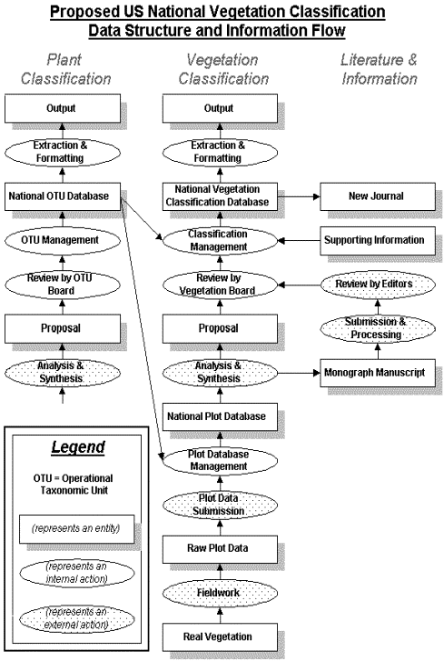

Principal Investigators:
Robert K. Peet (University
of North Carolina),
Marilyn D. Walker (University of Alaska and U.S. Forest Service),
Dennis H. Grossman (The Nature Conservancy),
Michael D. Jennings (USGS Gap Analysis Program)
Vegetation classification is of central importance to biological conservation for planning and inventory, to resource management for monitoring and planning, and to basic scientific research as a tool for organizing and interpreting ecological information. All of these activities require that ecological units be defined and that their distribution on the landscape be known. Technological advances have made practical large-scale analyses that cross agency jurisdictions or geographic regions and address applied ecological issues as diverse as global change, ecosystem management, and conservation planning. However, all such efforts depend on availability of a common set of well-defined, broadly accepted classification units. The US government, through the Federal Geographic Data Committee (FGDC), has approved standards for a national vegetation classification system. However, before such a system can be operational and broadly accepted, an information infrastructure is needed to manage the anticipated 107 vegetation plot records and 104 plant associations that will form its basis. The focus of the current proposal is the development of such an information infrastructure, designed so that information can be distributed across the web while being both continually updated and perfectly archived.
This project will design, develop and test prototypes of the information infrastructure that is necessary to support the U.S. National Vegetation Classification. A working group will meet periodically at the National Center for Ecological Analysis and Synthesis (NCEAS) to advise the principal investigators as well as a dedicated postdoc/programmer. The first component of the infrastructure is a stand-alone vegetation plot database. Plot data provide the essential information that underlies vegetation classification. This database will be designed to allow inclusion of diverse types of plot data, and will be first tested using 4 large and divergent datasets. Such data will be useful, not only for revision of the national classification, but also for numerous studies of vegetation composition, structure and dynamics. The second component will be a database that holds the vegetation classification itself. This will include a novel system of tracking the lineage of each recognized vegetation type by establishing a unique record for each type -- start and stop dates for records will never be discarded, allowing the recognized types and their supporting data to be reconstructed for any time at any time. A third component, to be developed in concept only, is a database that contains the botanical nomenclature needed to identify the species referenced in the other two databases. Plant nomenclature as treated in current databases is inadequate for use in the plots and classification databases because the meanings associated with plant names change, leaving many applications ambiguous.
The main purpose of the proposed research is
to design and establish a workable system. Once developed and rigorously tested,
the prototype databases will likely be adopted and maintained by some combination
of The Nature Conservancy (TNC), USGS (NBII), FGDC and the Ecological Society
of America (ESA) for the broad benefit of users, which will include agency,
academic, and other scientists and managers. These arrangements are presently
being formalized through a Memorandum of Understanding among the parties.
Results of prior research
None of the PIs have previously received NSF support for a project relevant to the current proposal. Consequently, there are no results to report from prior research relevant to this proposal. However, Peet and Walker have both received awards in other areas, which we briefly elaborate below.
DEB 97-07551 to Robert Peet. Long-term studies of forest dynamics on the North Carolina Piedmont. $209,498. August 1, 1997- July 31, 2002. This LTREB grant supports continued measurements of the rich assemblage of long-term research plots in and near the Duke Forest and thereby enhances the value of the site as a model system for the study of succession. The data are currently being used in studies of tree growth and mortality, trajectories of compositional change, spatial patterns of change, impacts of natural disturbances, and predictability of composition. Over the years this project, which began with NSF support in 1978, has produced numerous papers and been the focus of at least 6 Masters theses, 8 Ph.D. theses and 4 Postdoctoral studies. The current grant has supported one masters thesis and one postdoctoral student. Over 100 undergraduate have been employed in the project, including approximately 16 supported by the current grant.
OPP 94-00083 to Marilyn Walker. Comparative responses of moist and dry arctic tundra to altered snow and temperature regimes. $612,952. July 1, 1994 - June 30, 1999. This is a contribution to the International Tundra Experiment (ITEX). The goals of the on-going project are: (1) to examine the early responses of tundra plant species, plant communities, and the physical environment to experimental increases in summer temperature and winter snow depth (Walker et al. 1999), (2) to determine responses of natural vegetation to recent decade-scale natural warming, and (3) to work with other ITEX sites worldwide to synthesize initial responses. Major accomplishments of this research have been: (1) leading and completing a comprehensive synthesis of ITEX responses for the first 4 years of experiments worldwide (Arft et al. 1999), (2) analyzing community change at Toolik Lake and Imnavait Creek, Alaska, using a combination of multivariate statistical techniques and deterministic modeling (Markovian analysis) (Walker et al. in prep.), and (3) developing a new model for simulating tundra vegetation change on an annual time step (ArcVeg) (Epstein et al. in prep.). This work has supported 2 postdoctoral research assistants, one Ph.D. candidate, and numerous undergraduates. It has resulted in over 12 publications and book chapters to date.
1. Introduction
Vegetation classification is of central importance to biological conservation for planning and inventory, to resource management for monitoring and planning, and to basic scientific research as a tool for organizing and interpreting ecological information. All of these activities require that ecological units be defined and that their distribution on the landscape be known and understood. Vegetation classification contributes significantly to analysis of ecological problems that vary in scale from persistence of tiny populations of endangered species to global projections of the impact of climate change. Technological advances in fields such as remote sensing and geographic information systems have made practical large-scale analyses that cross agency jurisdictions as well as geographic regions and address applied ecological issues as diverse as global change, ecosystem management, and conservation planning. However, all such efforts depend on having available a common set of well defined and broadly accepted classification units.
Through the combined efforts of The Nature Conservancy (TNC), the Ecological Society of America Vegetation Panel (ESA-VP), and the Federal Geographic Data Committee (FGDC), the United States is on the verge of having its first fully functional, widely-applied National Vegetation Classification system (NVC). The federal government has declared the need for a single standard, and on October 22, 1997 the Secretary of the Interior, acting as Chair of the Federal Geographic Data Committee, approved the Vegetation Information and Classification Standard (http://biology.usgs.gov/fgdc.veg), which is now the standard vegetation classification for U.S. federal agencies and their cooperators. Yet, there are still major obstacles to overcome to make such a system operational and broadly accepted. ESA-VP is working in close collaboration with TNC and FGDC to draft standards for field data acquisition, type definition, and peer review of proposed additions and changes. A fourth component, an information infrastructure to manage information on the anticipated 107 vegetation plot records and 104 plant associations required for a national system, and to distribute this information across the web in a continually revised but perfectly archived format, represents a major intellectual and practical obstacle to the realization of the system. It is this critical piece that our proposal addresses.
We propose to establish a research project to be conducted at the National Center for Ecological Analysis and Synthesis (NCEAS) in Santa Barbara to design, construct and test prototypes of two core components of the information infrastructure necessary to support the U.S. National Vegetation Classification (US-NVC). These prototypes will include. First, a stand-alone vegetation plots database system with internet access tools, and second, an addition to the TNC Heritage Data Management System that will allow the national vegetation classification database to be both continually revised and perfectly archived. Subsets of our research team and collaborators (Table 2) would meet at intervals over a 2-yr period to develop and test components of the system. A postdoctoral associate at NCEAS would work in consultation with project coordinators, TNC and federal government analysts, and NCEAS data analysis staff to complete most of the actual design and programming. Data from four divergent but relatively large and mature vegetation classification projects that span the range of data types likely to be incorporated in the system would be used to explore and demonstrate the robustness of the system.
Although additional refinement and management tools may be needed for full implementation, once developed, tested and reviewed the modules of the working prototype would likely be adopted and maintained by TNC, USGS (NBII), FGDC and ESA. A memorandum of understanding has been agreed to by three of these participants, and the third (FGDC) is expected to follow soon (see Section I - Supplemental Information). USGS through its National Biological Information Infrastructure (NBII) anticipates maintaining and serving the plots database, and TNC anticipates maintaining and serving the vegetation classification database as part of its Heritage Data Management System. The plant nomenclature database attributes anticipated here are likely to be incorporated within the USDA Plants Database and the USGS ITIS Database.
NCEAS has agreed to be the focal point for these activities and has awarded the PIs (as representatives of the collaborating organizations) $52,000 in seed money to begin work (see Supplemental Information). NCEAS will also assist with computational expertise and infrastructure, allow use of its facilities for working group meetings, and house our postdoctoral associate/programmer. The USGS, through its GAP Analysis Program, has pledged an additional $50,000 for this Project (with half available in fiscal 1999; see Supplemental Information). TNC is currently developing a new SQL-based Heritage Data Management System, which will incorporate the bulk of vegetation classification information, and expects to incorporate the proposed community lineage-tracking component module. Nonetheless, the scope and cost of this project are beyond the ability of these organizations to support in full. The NCEAS and GAP funds will be used to cover participant costs for an anticipated eight working group meetings to be held for design and evaluation functions. We are requesting from NSF funds needed to support the programming and testing phases outlined here. Because this is really one integrated project, we will describe all the pieces in this proposal.
The United States has lagged well behind much of the western world in vegetation classification. In many countries vegetation plot data have been collected and classifications developed using standardized techniques for well over half a century. Synthetic, plot-based treatments of the vegetation of such countries as Great Britain (Rodwell 1991-99), Austria (Mucina et al. 1993) and The Netherlands (Schaminée et al. 1995-98) have appeared in recent years, and work is underway on a synthetic treatment of the vegetation of the whole of Europe (Mucina et al. 1993, Rodwell et al. 1995, Mucina and Schaminée in press).
Historically, vegetation classification efforts within the United States have been diffuse and uncoordinated. There are no public archives for plot data, and prior to the 1980s there was no significant movement toward a comprehensive national vegetation classification. During the 1980s several federal agencies and NGOs (including The Nature Conservancy) recognized the need for a standard vegetation classification for conservation and land-use planning and began working on this challenge. The concurrent maturation of remote sensing and GIS technology produced a tremendous increase in the demand for vegetation maps and inventory, and a consequent increase in the number of vegetation classification efforts and approaches. Increased interest in ecosystem management and conservation planning have also driven a demand for accurate maps of the distribution of ecosystem types across landscapes. The ESA Vegetation Panel (all PIs are members) was founded with the objective of providing professional oversight and leadership in the face of diversifying standards for vegetation classification. At nearly the same time the ESA Vegetation Panel was established, the FGDC Vegetation Subcommittee was established within the Federal Government with the more circumscribed objective of defining one set of national standards for vegetation classification. The FGDC proposed adoption of the vegetation classification system developed by The Nature Conservancy with only minor modifications. This hierarchical system has two primary levels an upper level defined on the basis of physiognomy (Class through Formation), and a lower level defined on the basis of species composition or floristics (Alliances and Associations). However, only the details of the physiognomic levels were elaborated by the FGDC proposal. The ESA Vegetation Panel quickly developed an advisory relationship with the FGDC Vegetation Subcommittee and provided extensive comment on the proposed national standards. The FGDC standards, with nearly all the ESA Vegetation Panel suggestions incorporated, were formally adopted by FGDC in October 1997 (see http://www.usgs.gov/fgdc.veg/).
Completion of the review of the proposed national vegetation classification standards (and their adoption and publication by FGDC) marked the end of the first phase of the ESA Panel's work. The focus of the second phase, now in progress, is to propose the basic standards needed to support the floristically-based level of the classification (Alliance and Association). These standards are particularly crucial, as they will define a basis for recognizing ecological assemblages of species. FGDC is largely looking to ESA-VP and TNC to provide leadership for their formulation. A working draft of these standards has been developed by ESA-VP and a draft should be available for review by August 1999.
As part of its current activities, ESA-VP intends to propose NVC standards related to data storage, distribution, and management, both for the classification per se, and for the vegetation plot data needed to document the classification. In February 1997, a special data management and architecture subcommittee of ESA-VP devised an innovative and forward-looking data management and flow system for the US-NVC that anticipates need for a continuously updated, web-distributed system that is, nonetheless, perfectly archived. In essence, this proposal to NSF is intended to refine the ESA-VP data management and architecture concepts, develop the necessary conceptual and logical models, and construct and test prototypes of the core missing components of the information system using data from four case studies. The third phase of the ESA-VP activities will focus on development and implementation of peer review procedures for proposals to add to or revise the Associations and/or Alliances that populate the US-NVC. Realization of these phase three objectives will absolutely depend on completion of the proposed information infrastructure.
Information flow into, through, and out of the US-NVC is central to its purpose and efficient functioning; in effect, information flow defines and holds together all the parts of the US-NVC. The proposed architecture consists of three linked databases - one that contains the plot database on which the classification units are based, one that contains the classification itself, and one that contains plant nomenclature information. These databases will each present a "moving target" owing to the continual collection of new plot data, additions to and revision of the vegetation classification, and revisions in plant nomenclature. Consequently, the system needs to be designed to use Internet-based communication; otherwise it would be impossible to distribute the continually evolving databases in a timely and economic fashion.
Information flow through the proposed US-NVC is shown in Figure 1. Information enters in the form of plot data, which are filtered by a review process and stored in standardized format in a national plots database by a management process. Plots are used to define and describe the Associations that constitute the fundamental units of the vegetation classification in much the same fashion as a type specimen defines a species. Accordingly, proposals for changes in the classification will make explicit reference to plots in the plots database and to related vegetation types in the classification database. All such proposals for changes will go through a review process and a data management process. Both the plots and classification databases will make frequent use of plant names, and plant names change as our understanding of species changes. Consequently, there must be a standard plant nomenclature database with mechanisms for tracking changes and incorporating those changes in the plots and classification databases. In each case, Internet access should ultimately allow the database to be viewable, searchable, and downloadable, in part or in full, on demand.
The fundamental unit of vegetation information is the plot a listing of species names and abundances, combined with various vegetation and site attributes. In order for the definitions and descriptions of vegetation types in a classification to be scientifically credible, they must be based on plot data that are archived for future study and evaluation. Nations with a mature national classification invariably have a national plots database populated with a large number of plots, both recent and historic. For example, the plot database for The Netherlands, a county not much larger than Maryland, has roughly 300,000 plots. Indeed, The Netherlands is only one country in a large confederation that is working toward a plot-based European Vegetation Classification that uses a standard sampling and classification protocol (Braun-Blanquet) and a standard set of software tools (TurboVeg, written by Stephan Hennekens) for maintaining and manipulating large plot databases.
We propose to design, construct and implement a prototype plot database program for North American plot data. Like the TurboVeg software used by the European community, our database system will store plot data in a consistent format and in compact form for local use (the 300,000 plots in Dutch plot database occupy only about 200 Mb of disk space). It should be accessible over the Internet for searching, extraction and submission. It should allow efficient updating of plant nomenclature, while retaining unchanged the original names reported by the author. Finally, software tools should be provided for efficient manipulation of subsets of the data.
The collection of vegetation data toward a national classification is in many ways comparable to the Human Genome Project, where independent contribute descriptive data into a pool that collectively forms the essential information infrastructure that allows advancement of the field. We anticipate that the proposed plot database will ultimately come to resemble GenBank in that all workers who describe vegetation will deposit their plot data directly or in one of a linked set of compatible databases. Related disciplines are well ahead of US vegetation science in solving such problems. For example, the paleoecological community has access to the National Pollen Database (http://julius.ngdc.noaa.gov/paleo/napd.htm) which has for the first time made national and international syntheses of paleoecological conditions possible (e.g. Overpeck et al. 1997).
The importance of plot data archives has been recognized within many agencies, and in-house plot databases are in use or are emerging in many organizations, including TNC, USFS, USDA, and USGS-BRD. None of these efforts contains all the attributes or adheres completely to the standards needed for the US-NVC. Because each organization has its own mission, none of these efforts alone is suitable for a national standard. The history of vegetation classification in the U.S. shows that this vital task has the most likely chance of successful development in an NCEAS-like environment with broad participation of all sectors. Fortunately, USGS-BRD appears committed to serving as steward for the plots database, once it is developed (see MOU in Section I - Special Information).
The US vegetation ecology community is starting from a background of 100+ years of somewhat chaotic and idiosyncratic vegetation survey and description, and is seeking to attain a massive synthesis that will allow the immediate use of this historical legacy and will focus and refine future work. If appropriate standards, databases and software tools were in place, much existing and most future data could be used by multiple researchers for synthetic purposes. With development and demonstration of the plot database we propose to construct, we hope to catalyze this major, nation-wide synthetic effort.
A vegetation classification for the United States
The US-NVC is evolving out of a series of related efforts. The most comprehensive effort, that of TNC (e.g. Grossman et al, 1998, Anderson et al, 1998; see http://www.consci.tnc.org/library/pubs/class/index.html), is providing a critical first approximation at a national effort. TNC developed the overall framework for the current US-NVC and has now identified over 4700 vegetation Associations within roughly 1500 Alliances. These Associations and Alliances will populate on an interim basis the Association and Alliance levels of the US-NVC when the proposed standards are approved. Although these Associations and Alliances are based on both plot data and qualitative field studies, most have not been comprehensively described using plot data, and rarely if at ever are the data readily accessible for reanalysis. Considerable revision and expansion will likely occur over the next several decades as we move toward a more fully validated, plot-based classification.
A key issue in design of the classification database is that the database will continually change as new information is added. The classification units will represent a "moving target", and therefore it is of critical importance that the database format allow the classification and species name data to be continually revised, while remaining perfectly archived and Internet accessible. In other words, it must be possible to reconstruct, at any time in the future, the database at any time in the past. Otherwise it would be impossible to reconcile or align differences in data or analyses developed at different times using the same national standard classification database. Another key design issue is that it must be easy to disseminate, easy to update, and easy to maintain local working copies of the data.
The Nature Conservancy has developed and is using a pilot classification database in its Biological and Conservation Database System (BCD). The database maintains the names, codes, descriptions, distribution, environmental conditions, conservation status and much more information about each vegetation Alliance and Association as well as all of the physiognomic levels above them in the classification hierarchy. This system will be upgraded within the next 18 months to a state-of-the-art SQL database system with a Windows user-interface to form the Heritage Data Management System (HDMS). The HDMS will be web compatible and plans are being developed to make the data available through the web. The upgraded HDMS system will allow TNC to continue to support and provide access to the national classification database.
The classification database in the initial version of HDMS will, like BCD before it, not have the ability to track changes in the classification in an efficient manner. Consequently, the classification will not be fully archived, which will make it impossible to reconstruct the classification on the date cited in a literature citation or a legal document. Further, TNC has no immediate plans to link HDMS with a plots database, which will limit the ability of scientists to assess the validity of the components of the classification, and the ability of reviewers to evaluate proposed changes. Finally, the system will have only rudimentary ability to track changes in plant nomenclature.
We propose to build on the extensive design and programming being undertaken by TNC in its development of the HDMS. HDMS will serve as the core of the classification database system. However, we propose to engineer additional modules and capacities that would increase the value of and access to the information in HDMS. These modules would incorporate efficient tracking of changes so that the classification system effective on any given date could be reconstructed. Linkages to the plot database would also be incorporated in Association records.
Botanical nomenclature standards for the United States
A major challenge in development of plot and vegetation classification databases is the "moving target" nature of plant names. Names may change in meaning as taxa are lumped or split, with the consequence that established rules for botanical nomenclature are inadequate for continuously updated database systems. In a plots database using traditional botanical nomenclature, it is inevitable that some scientific names will be used with multiple meanings, and there will be no clean way to sort out those meanings or to update the nomenclature used in the database. As a simple example, in 1993 Aristida stricta (as then used) was recognized as consisting of both Aristida stricta and Aristida beyrichiana (Peet 1993). As a consequence, in papers and databases that postdate 1993 Aristida stricta sometimes means Aristida stricta in the narrow (and more meaningful) sense and sometimes in the broad sense; a method is needed to distinguish between the two meanings of Aristida stricta. Even if botanists were to follow the rules of zoological nomenclature and agree to accept without question the most recent nomenclatural interpretation, there would still be ambiguity in nomenclature deriving from data collected at different times. We anticipate eventual application of a system of "operational taxonomic units" (OTUs), each uniquely associated with one particular application of a species name. All reference to plant species in the US-NVC system (such as in names of Associations and Alliances, descriptions of Associations and Alliances, and the plot database) would be by OTU number rather than traditional nomenclature. Software tools would make such use transparent to the user, except in the case of ambiguities that require human intervention. This approach would allow reconstruction of the precise meaning attached to a species name at any time in the history of the database, and would facilitate updating the nomenclature within the US-NVC as the nomenclature database changes.
Some form of plant species database with the equivalent of our OTU numbers will be needed if we are to accurately enter plot data into the plots database, but actual implementation of a national standard OTU database will require extensive consultation with the systematics community and is beyond the scope of the present project. Nonetheless, we foresee adoption of an OTU database as essential and inevitable, and we will design the US-NVC and plots databases to be able to exploit the national standard OTU database at such time as it becomes available. Core personnel from the USDA PLANTS and the USGS ITIS database projects will be invited to participate in the working group to facilitate future interactions and encourage compatibility between our respective activities. Preliminary discussions with personnel from these programs have revealed considerable interest in and enthusiasm for implementing the changes we are likely to propose for their databases. Moreover, FGDC is considering establishment of national biological nomenclature and taxonomy standards. These proposed standards need the equivalent of the OTU number approach if they are to achieve the goals of being continually revised and perfectly archived.

Figure 1. The central column shows
the flow of information on vegetation from its entry as plot data into the plot
database to its emergence as output from the classification database. A parallel
flow of information is anticipated for botanical nomenclature. Critical to the
functioning of the entire system is the role of partner organizations in the
management of information flow into and out of the databases and peer-review
of proposed changes. Development of the requisite partnerships is unlikely
without a working demonstration model of the proposed infrastructure.
3. Significance of the Research
Researchers, resource managers, and policy makers all require information on vegetation composition and distribution. Toward this end large amounts of data are collected in diverse forms, but rarely synthesized and distributed beyond regional projects. This situation illustrates the fundamental need for sophisticated data storage and archiving systems that is quickly coming to the forefront in ecology. Ellison (1997), drawing heavily on the National Research Councils Bits of Power report (1997), argues eloquently for archiving and sharing data. The combined federal environmental and natural resources research budget for monitoring and related research is $650 million (National Science and Technology Council, 1997). Although the portion of this total budget representing vegetation inventory is surely a modest part of the total, the numbers do suggest the magnitude of this effort. Most vegetation description and inventory data are largely invisible and unavailable to those outside the immediate sphere of collection. If appropriate standards, databases and software tools were in place, existing and future data and their associated analyses could be used by multiple researches for multiple synthetic purposes. The ESA draft vegetation standards and their proposed databases offer a solution to this problem for a fundamental set of data.
FGDC has recognized that construction of the floristic components of a US-NVC is too complex for it to handle without further resources and has taken advantage of the opportunity to collaborate with ESA-VP and TNC. The development and demonstration activities that we propose to undertake follow three years of discussion within ESA-VP of how to refine, implement and advance the US-NVC. These discussions have involved a broad cross-section of vegetation scientists from academia, federal agencies, and private organizations. This proposal is the logical outcome of that deliberation. In effect, it proposes a collaboration among FGDC, TNC, ESA, and USGS (NBII) to fully elaborate, develop, and demonstrate the feasibility of a proposed data architecture for the US-NVC. These organizations have jointly drafted a Memorandum of Understanding stating their intent to cooperate in the development of a US-NVC. TNC, USGS (NBII) & ESA have all agreed to sign, and FGDC is expected to join as well (see Section I - pecial Information). The proposed demonstration project is expected to be sufficient to convincingly demonstrate proof of concept and allow ready implementation by the partner organizations.
4. Proposed Activities and Timetable
The specific activities will include: (1) development and testing of a working prototype of a national plots database that would be publicly accessible and searchable via the Internet, (2) development and testing of a working prototype of an additional module for the TNC-HDMS that will allow the vegetation classification to be continually revised and perfectly archived, (3) development of tools for downloading and manipulation of plot data offline for purposes of refinement of the classification, (4) construction a conceptual design for a plant nomenclature database that will allow for the system to be continually revised, perfectly archived, and will remove the ambiguity of meaning intrinsic to current nomenclatural standards, and (5) testing and demonstration of the prototype databases and tools using a diversity of data types.
As described in the problem statement, the proposed information system would consist of three linked databases - one that contains the classification itself, one containing plant nomenclatural information, and one containing the plot database on which the classification units are based. Each of these components poses design challenges that would need to be resolved during workshop meetings and subsequently refined and implemented by program personnel.
Plot database.
In order for a national vegetation plot database to function efficiently as a foundation for the NVC, it must possess several critical attributes.
Several plot databases or database programs are in existence, including TurboVeg created as part of the European classification effort, ECADS created by Region 1 of the USFS, "ESIS" created by USDA, and "PLOTS" developed by TNC to support the NPS Vegetation Mapping Program. Each of these programs was created for a specific type of data or for specific applications. Nonetheless, they incorporate valuable design features. During the design of the national plots database, we will review these efforts for useful attributes and overall architectural efficacy.
The degree to which data extracted from a plots database will be valuable for developing and refining the NVC is likely to depend heavily on the availability of software tools for manipulation and summarization of those data. Part of the success in Europe of TurboVeg derives from the associated software tools. We will provide at least minimal tools for data manipulation.
Classification Database
TNC has taken the lead in developing the first two generations of the US-NVC database system and will continue to provide the home for the database. However, budgetary and time constraints preclude inclusion of many database elements that ESA-VP views as critical. The proposed project has the potential to build on the on-going TNC efforts and link the product with the plots database to provide a fully operative and integrated information infrastructure for vegetation science.
The need for a classification database that is constantly revised, yet perfectly archived, presents a special challenge. The ESA-VP Subcommittee on Data Management and Architecture has developed a database design explicitly to handle this problem (Peet et al. 1997). Specifically, the classification database would consist of numbered records that contain fields for tracking at least the number of the element (Alliance or Association), the start date for the record, the stop date for the record, and pointers to or information on attributes of the element, such as its name, composition and distribution. Records would never be discarded or changed in this plan (except for addition of stop dates as appropriate); at such time as the classification is changed or updated, new records would be generated to supercede old records. This architecture allows the database to be searched for all records in effect on any given date, and thus enables the entire US-NVC to be reconstructed for any given date. Further, the projected change tracking would support reconciliation of regional classifications from different dates to a common classification for large-scale synthesis. Local copies would be easy to maintain because updates could be downloaded based on a cutoff date.
The ESA-VP approach to change tracking appears to be an elegant solution, but certainly is not the only possible solution. For example, Taswell & Goodin (1998) have built on some of the ideas in Peet et al (1997) to develop a somewhat different protocol for tracking changes in the classification that anticipates likely architectural constraints imposed by HDMS. These various approaches and others need to be reviewed by a broader audience to determine the most efficient means of tracking changes in the classification database.
Taxonomic (OTU) Database
Both the plots database and the classification database make extensive reference to scientific names of plants. Consequently, a standard is needed for plant names. However, candidate standards, such as the USDA PLANTS database and the USGS ITIS database do not currently allow tracking of changes in use of species names. To solve this problem, we propose essentially the same change tracking strategy as proposed for the community classification. All reference to plant species in the US-NVC system (such as in names of communities, descriptions of communities, and the plot database) will be by OTU number, rather than traditional nomenclature. OTU numbers are similar to the record numbers in the US-NVC in that they include a start date, stop date, and pointers to attributes. Any change in the botanical nomenclature database would generate a new record(s) with a new OTU number(s). Thus, if a species were split into two species, the original OTU would be replaced by two new OTU numbers, even though the Latin binomial would be retained for one of the two products of the split. This approach would allow reconstruction of the precise meaning attached to a species name at any time in the history of the database, and would facilitate updating the nomenclature within the US-NVC as the nomenclature database changes.
A developing multi-agency project, the Integrated Taxonomic Information System (ITIS, see http://plants.usda.gov/itis/), incorporates some design elements required for the OTU system. In addition, a reengineering of the USDA PLANTS database is planned with the key individuals showing considerable interest in incorporation of the OTU system. We plan to include personnel from both ITIS and PLANTS in the nomenclature database design meeting so as to provide a clearer view of our needs and of how they might implement change tracking.
Demonstration Datasets
The prototype plot database system will be tested and refined using plot data from four large and well-developed datasets that represent some of the more important forms of plot data currently collected or available, and which, through their diversity, should demonstrate the robustness of the system developed. One dataset is currently being compiled by TNC for the Greater Yosemite vegetation mapping project integrating new plot data with existing plot data originally collected by several different agencies and organizations. Close proximity of researchers working on the Yosemite project to our program office in Santa Barbara will allow development activities to proceed without the necessity of convening a Working Group meeting. Two other datasets were developed and are maintained by project PIs, one for North Carolina vegetation (Peet) and one for arctic and boreal vegetation (Walker). Finally ESA-VP member Robert Pfister has agreed to make available portions of the massive Forest Service data archive for the Northwestern states.
Table 1. Test databases to be used in the prototype databases
|
Project |
Ecological Extent/Major Units |
Samples |
Data Type |
Collected by |
|
Greater Yosemite Ecosystem |
Coniferous forest, deciduous forest, alpine & meadow, riparian vegetation, and shrub |
1600 |
TNC survey, NPS survey, USFS habitat types |
TNC, National Park Service, US Forest Service |
|
North Carolina Vegetation Survey |
Mixed hardwood forest |
1600 |
Peet et al. 1998 |
Co-op group consisting of academics & NC Heritage Program |
|
Rocky Mountain Forests |
Montane & subalpine coniferous forest |
Several thousand |
USF Habitat Type (e.g. Pfister and Arno 1980) |
USFS & collaborating institutions |
|
Arctic Tundra. Walker et al. 1994 |
Arctic tundra, Boreal forest |
500 |
Braun-Blanquet (1964), USFS habitat types |
NSF-funded projects, various, USFS |
Work Plan
The activities will be designing, testing, and refining the prototype database system. These will be accomplished by two functions: (a) a series of working group meetings to explore conceptual and design issues; and (b) tasks associated with the direct assembly, construction and testing of the prototypes.
The primary activity will be design, programming and refinement of the prototypes of the two component database systems (US-NVC and Plots), and conceptual design of a species nomenclature database system. This will be accomplished over a 2-year period, with 8 working group meetings and a supporting postdoctoral fellow with expertise in SQL programming. We envision this to be a recent graduate specifically interested in the field of science information management.
The project will benefit from the extensive experience and participation of TNC data management staff to the extent of at least 6 person months of participation as a matching contribution. This participation is viewed as key by TNC because it would assure compatibility with their on-going database development activities. The postdoctoral fellow will be housed in Santa Barbara at NCEAS where he or she can interact with and receive advice from a permanent staff dedicated to data analysis and computer support for synthetic ecological research. All working group meetings will be conduced at NCEAS.
We anticipate that the projected 21 working group members will be assigned to one or more of four subgroups. Subgroup 1 will be responsible for developing the plot database, subgroup 2 will be responsible for developing the change tracking capability for the classification database, and subgroup 3 will be responsible for identifying mechanisms to track plant species nomenclature. Each of subgroups 1-3 will contain 2-3 individuals assigned the role of analyst (with the post-doc/programmer acting as one of the analysts for each subgroup). Subgroup 4, consisting primarily of the principle investigators (steering committee) and the analysts, will be responsible for oversight and synthesis of the data systems, and will meet to review, test and refine the coordinated systems once assembled.
Subgroups 1 and 2 will be responsible for developing the conceptual
model for their assigned database. They will participate during their first
meeting in a user needs analysis" and will identify the data to be managed,
appropriate linkages among the data, and any other critical functionality for
the system (e.g., data import/export requirements for the plot database). They
will anticipate the types of data manipulation and reporting that will be required
of the system. At a second meeting approximately one month later, the analysts
within the subgroup will have a small meeting for the purpose of drafting the
logical model for the database. At a third meeting the subgroup will review
the database functionality and will participate in its testing. The analysts
will be responsible for taking the conceptual model developed by the subgroup
and developing a logical model that identifies the specific fields, tables,
linkages, and other utilities of the system. Once the logical model is completed,
the analysts will give the logical model to the post-doc/programmer who will
be responsible for developing the physical model and actually programming the
database. Subgroup 3 will meet with subgroup 2 because of the similarity of
the lineage tracking problems to be confronted, but will only go so far as to
develop the user needs analysis and evaluate the changes needed in current taxonomic
databases to meet those needs.
Table 2. Anticipated participants:
|
Participant |
Affiliation |
Subgroup |
Additional Roles |
|
Ton Damman |
Kansas State University, ESA-VP |
1 (co-leader) |
Plot database design and use |
|
Jim Drake |
TNC |
1 |
Plot database design and use |
|
David Glenn-Lewin |
Wichita State Univ., Chair, ESA-VP |
4 |
Oversight, linkage to ESA-VP |
|
Kathy Goodin |
TNC, pilot BCD classification database architect |
1,2,4 |
Analyst, TNC database links and compatibility |
|
Dennis Grossman |
TNC, ESA-VP, FGDC |
1,2(co-leader), 4 (co-leader) |
Steering Committee, plots and classification database |
|
Stephan Hennekens |
European Vegetation Survey, TurboVeg design & programming |
Consultant 1 |
Plot database development |
|
Michael Jennings |
USGS-BRD, ESA-VP, FGDC |
4 (co-leader) |
Steering Committee, federal programs linkage |
|
Todd Keeler-Wolf |
California Natural Heritage Program, Yosemite Project |
Consultant -1,2 |
Yosemite data |
|
Linnet Geomatics Consultant |
Linnet Geomatics |
Consultant 1,2 |
Linkage to TNC HDMS database |
|
Larry Morse |
TNC, Coordinator TNC Plant Nomenclature Database |
3 |
Linkage to plant systematics |
|
Robert Peet |
University of North Carolina, ESA-VP |
1,2 (co-leader),3 (co-leader),4 (co-leader) |
Steering Committee, plots and classification databases |
|
Scott Peterson |
USDA, Director, USDA National Plants Data Center |
3 |
Links to USDA PLANTS & ITIS databases |
|
Robert Pfister |
University of Montana School of Forestry, ESA-VP |
1 |
USFS Habitat-Type Data |
|
Tom Philippi |
SREL, ESA-VP Data Architecture Subcommittee |
1,2,3,4 |
Analyst, overall design and programming |
|
Post doc / Programmer |
Unidentified |
1,2,3 |
Analyst and Primary Programmer |
|
Paula Ross |
USDA National Inform. Tech. Center, ITIS Database Coordinator |
1,2,3 |
ITIS Coordination and linkages |
|
Rob Solomon |
TNC, Director of Conservation Database Systems |
Consultant 2 |
Oversight, links to TNC databases |
|
Steve Taswell |
TNC Systems Analyst, pilot BCD classification database architect |
2,3 |
Analyst; Linkage to and modification from existing TNC databases |
|
Jan van Wagtendonk |
ESA-VP, NPS |
Consultant 1,2 |
Yosemite data |
|
Gary Waggoner |
USGS BRD, Center for Biological Informatics, ESA-VP, FGDC |
3 (co-leader), 4 |
Oversight, links between OTU and Plants/ITIS systems |
|
Marilyn Walker |
University of Alaska and USFS, ESA-VP |
1(co-leader), 2,3,4 (co-leader) |
Steering Committee, Arctic tundra and boreal forest data, |
Anticipated Results and Beneficiaries
Our primary goal is for this project to provide sufficient proof of concept for the US-NVC database system architecture to catalyze formation of a national-level partnership to maintain and promote the use and growth of the component databases. The Memorandum of Understanding among ESA, TNC, USGS and FGDC currently awaiting signatures indicates interest in such a partnership. USGS and TNC have indicated interest in housing the plots and classification databases respectively. As FGDC and key federal agencies already support the effort in concept, our hope is that a formal partnership agreement would, as a result of this project, arise between ESA (with the role of peer review), TNC (with the role of providing database structure, most initial data, and maintenance of the classification database), and the USGS-NBII (with the role of long-term plot database and botanical nomenclature database support and maintenance). Working prototypes should be sufficient to assure feasibility and facilitate implementation. [As of January 1999, TNC is undergoing organizational changes that may lead to a separation of its science and preservation activities into two organizations, but both groups have expressed a desire to continue to participate as key partners.]
We expect that the prototype plots database could be placed in operation almost immediately after completion of the project. The system proposed would provide a stable, long-term repository for data and will give contributors and users a formal mechanism for proper citation of data. Ultimately, the beneficiaries will include all scientists who wish quantitative information on vegetation composition or species distribution for synthetic overview, revision of classification, conservation planning, identification of ecological or biogeographic patterns, or documentation of composition change.
Initial design work for the OTU database has the potential to lead to a new standard for taxonomic nomenclature appropriate for the electronic age that would apply not only to plants, but to all organisms. The general approach will be tested with community names, and sufficient design discussion will be undertaken to structure follow-on activities among the PLANTS and ITIS database managers and the proposed new FGDC subcommittee on biological nomenclature.
The module for the NVC database should serve at least minimally to upgrade the TNC-HDMS platform for the US-NVC, thereby giving the nascent US-NVC the desired attributes of being continually updated and perfectly self-archived. Ultimately this should facilitate development of a peer-review process for changes, which might be run collaboratively with the ESA-VP. The direct beneficiaries will be individuals and organizations that wish to inventory or manage natural resources, preserve or document biodiversity, or document the ecological context of specific observations. The strategies developed should be generalizable and should thereby benefit users and creators of vegetation classifications worldwide.
We anticipate publication of two or more journal articles outlining both the vision and implementation of the database system. A general overview of the system and its role in ecology should be appropriate for BioScience, whereas the details of the system architecture and conceptual models should be appropriate for Applied Vegetation Science.
Anderson, M, P. Bourgeron, M. Bryer, R. Crawford, L. Engelking, D. Faber-Langendoen, M. Gallyoun, D.H. Grossman, K. Goodin, S. Landaal, K. Metzler, K.D. Patterson, M. Pyne, M. Reid, L. Sneddon, A.W. Weakley. 1998. International Classification of Ecological Communities: Terrestrial Vegetation of the United States. Volume II: List of Vegetation Types. The Nature Conservancy, 502 pp.
Arft, A.M., et al. (29 authors). 1999. Response patterns of Tundra Plant Species to Experimental Warming: A Meta-analysis of the International Tundra Experiment. Ecology: in press.
Braun-Blanquet, J. 1964. Pflanzensoziologie. Third Edition. Springer-Verlag, Wien.
Ellison, A.M. 1998. Data: The Tapestry of Nature. NCEAS Ecological Essay Series: http://www.nceas.ucsb.edu/fmt/doc?/nceas-web/resources/ecoessay/ .
Epstein, H.E., M.D. Walker, F.S. Chapin III and A.M. Starfield. A transient, nutrient-based model of Arctic plant communities. In preparation.
Grossman, D.H., D. Faber-Langendoen, A.W. Weakley, M, Anderson, P. Bourgeron, R. Crawford, K. Goodin, S. Landaal, K. Metzler, K.D. Patterson, M. Pyne, M. Reid and L. Sneddon. 1998. International Classification of Ecological Communities: Terrestrial Vegetation of the United States. Volume I: The National Vegetation Classification Standard. The Nature Conservancy. 126 pp..
Federal Geographic Data Committee, Vegetation Subcommittee. 1997. Vegetation Classification Standard (http://www.nbs.gov/fgdc.veg/standards/vegstd.htm). USGS, Reston, VA
Mucina, L. et al. 1993. Die Pflanzengesellschaften Österreichs. Gustav Fischer. 3 vols.
Mucina L., J.S. Rodwell, J.H.J. Schaminee and H. 1993. European Vegetation Survey: Current state of some national programmes. J. Veg. Sci. 4:429-438.
Mucina, L and J.H.J. Schaminée. 1999. Standard field vegetation records for the European Vegetation Survey. Applied Veg. Sci. 2: (in press).
National Science and Technology Council, 1995. Preparing for the Future through science and technology, an agenda for environmental and natural resource research. NTSC, White House Committee on Environment and Natural Resources.
National Science and Technology Council, 1997. Integrating the Nations Environmental Monitoring and Research Networks and Programs: A Proposed Network. NTSC, White House Committee on Environment and Natural Resources, Environmental Monitoring Team, 102 pgs.
National Research Council 1997. Bits of power : issues in global access to scientific data / Committee on Issues in the Transborder Flow of Scientific Data. U.S. National Committee for CODATA, Commission on Physical Sciences, Mathematics, and Applications, National Research Council. Washington, DC: National Academy Press.
Overpeck, J., Hughen, K., Hardy, D., et al., 1997: Arctic environmental change of the last four centuries. Science, 278: 1251-1256.
Peet, R.K. 1993. A taxonomic study of Aristida stricta and A. beyrichiana. Rhodora 95:25-37.
Peet, R.K. et al. 1997. Data management and architecture standards. Chapter 5 in Standards for the floristic levels of the U.S. National Vegetation Classification. ESA Vegetation Classification Panel (see http://ctenium.bio.unc.edu/vegpanel/data.html). Working draft.
Peet, R.K., T.R. Wentworth and P.S. White. 1998. A flexible, multipurpose method for recording vegetation composition and structure. Castanea 63:262-274.
Pfister, R.D. and S.F. Arno. 1980. Classifying forest habitat types based no potential climax vegetation. Forest. Science. 26:52-70.
Rodwell, J.S. British Plant Communities. 1991-95. Cambridge Univ. Press. 5 vols.
Rodwell, J. S., S. Pignatti, L. Mucina and J.H.J. Schaminee. 1995. European vegetation survey: Update on progress. J. Veg. Sci. 6:759-762.
Schaminée, J.H.J. et. al. 1995-99. De Vegetatie van Nederland. Opulus Press. 5 vols.
Taswell, S. and K. Goodin. 1998. Vegetation lineage tracking methodology. The nature Conservancy, Arlington, VA. 41 pp.
USDA, NRCS. 1997. The PLANTS national database. (http://plants.usda.gov/plants/). National Plant Data Center, Baton Rouge, LA 70874-4490 USA.
Walker, M.D., F.J.A. Daniels & E. van der Maarel. 1994. Circumpolar arctic vegetation. J. Veg. Sci 5:758-764.
Walker, M.D., W.A. Gould, and T. Edmands. Directional change in Arctic Alaskan vegetation in response to the warmest decade on record. In preparation.
Walker, M, D., Walker, D. A., Arft, A. M., Bardsley, T., Brooks, P. D., Fahnestock, J. T., Jones, M. H., Losleben, M., Parson, A. N., Seastedt, T. R., Turner, P. L., Welker, J. M. 1999. Long-term experimental manipulation of winter snow regime and summer temperature in arctic and alpine tundra. Hydrologic Processes (in press).